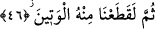
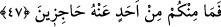

46. Sonra onun can damarını koparırdık (onu yaşatmazdık).
Yâni; sonra da onun boynunu vurmak sûretiyle kalbinden akciğerine giden damarını
koparırdık. Sözünü ettiğimiz bu damara “niyat” denilir. Kalbin kendisi ile bağlı olduğu
damar olduğu için bu damar kesildiğinde insan ölür.
Müfredat’ta açıklandığına göre âyette bahsedilen “el-vetîn”, karaciğeri besleyen ana
damardır ki bu damar koptuğunda insan ölür. Allah Teâlâ burada; “biz elbette onun sağ
elini yakalardık, sonra da onu helâk ederdik” ya da “onun boynunu vururduk”
buyurmamıştır. Aksine burada kullanılan ifâdeler, dünya hükümdarlarının çok kızdıkları
şahısları öldürmek için yaptıkları en korkunç uygulamanın anlatımıdır. Dünya
hükümdarları, cezâlandıracak oldukları kişiyi cellâda teslim ederler. O da kişinin sağ
elini tutar, onu kılıca baktırır ve boynunu vurur. Eğer cellâd kişinin kafasını enseden
vurmak isterse, bu sefer sol elini tutar. Eğer boynunu gerdanlık kısmından vurmak
isterse onu kılıca baktırır yâni kılıçla yüzyüze getirir. İşte bu, boynu vurulmak üzere
hapse atılmış olan kimsenin uğradığı cezâdan daha şiddetlidir. Çünkü bu cezâ çeşidinde
kişi, sağ eli tutulmuş bir hâlde kılıca bakmaktadır. Bu nedenle âyette -sol el değil de-
özellikle sağ el zikredilmiştir.
Müfredat’ta “onun sağ elini yakalardık” ifâdesinin anlamı; “biz onu engellerdik ve
savuştururduk” şeklinde verilmiştir. Yâni “engellenme ve savuşturulma” mânâsı sağ elin
tutulması ifâdesiyle karşılanmıştır. Tıpkı birisine, “filâncayı sağ elinden tut” dendiği
gibi.
Bâzı âlimlerin ifâdesine göre âyetteki “yemin” kelimesi “kuvvet” anlamındadır. Buna
göre âyetin mânâsı; “eğer o bize atfen bâzı sözler uydurmuş olsaydı, biz de gücümüzle
ve kudretimizle ondan intikam alırdık” demek olur. Bâzı âlimlere göre âyetteki “bâ”
harf-i cerri zâidedir. Buna göre âyetin mânâsı; “eğer o bize atfen bâzı sözler uydurmuş
olsaydı elbette biz onun sağ elini tutar, onun konuşacak gücünü ve kudretini elinden
alırdık” demek olur. Böylece “kuvvet” mânâsı, “yemin” kelimesiyle karşılanmış olur.
Çünkü her şeyin kuvveti sağ tarafındadır. Bu açıklamaya göre ifâde; mahallin zikredilip
hâlin kasdedilmesi kabilinden mecâz-ı mürsel olur. Veya melzum zikredilmiş ve lazım
kasdedilmiş olur.
47. Hiçbiriniz buna mâni de olamazdınız.
Ey insanlar “sizden hiçbiriniz de buna” bu katle ya da o söz uydurana yaptığımıza
“mâni olamazdınız.” Bunu ondan savamazdınız. Âyetteki “hâcizîn” lafzı “ahad”
kelimesinin sıfatıdır. “Ahad” kelimesi, olumsuz edattan sonra geldiği için genel anlam